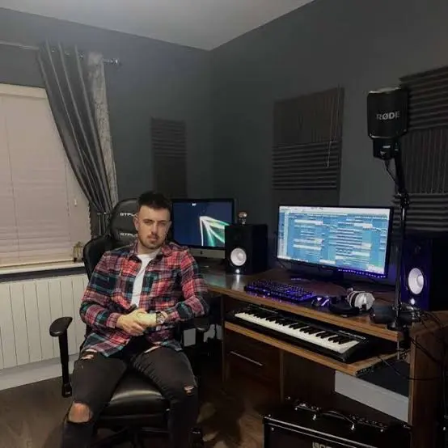

Based in Limerick, Ireland
Pierce O'Rahilly
DJ · Music Producer · Software Developer
Pierce O'Rahilly is a DJ, music producer, and software developer based in Limerick city. He produces and releases original music with local artists, plays venues across Limerick and beyond, and runs Softbox — an Odoo implementation and software as a service company. He's currently studying Computer Science.

DJ Services
Available for clubs, private events, and festivals across Limerick and beyond.
📍 Punches Bar, Patrickswell
📍 Garryowen Rugby Club, Limerick
📍 Molly's Nightclub
📍 101 O'Connell Street (DJ & Saxophone)
📍 Set Rights, Cratloe
📍 Dolan's, Limerick
Original Music
Tracks produced and released independently.
Press & Features
Hot For 2022 Irish Acts
Hot Press Magazine
Aged just 17, the Limerick producer marked himself as a serious force to be reckoned with as part of Irish Music Month's 'A New Local Hero' initiative. Selected as Spin South West's top choice in the talent search, he impressed the judges with his latest release, 'Self Belief' — a collaboration with fellow rising star Sade Ahmed. His Soundcloud platform showcases the depth of his genre-blending approach.
Limerick's Pierce O'Rahilly releases dance track Breathe
Live 95 Limerick Today · Monday, February 24, 2025
Limerick artist Pierce O'Rahilly talks with producer Anne Marie about his recent release, 'Breathe'.

SPIN South West Local Hero — Irish Music Month
SPIN South West
Congrats to Pierce O'Rahilly who has been selected as SPIN South West's Local Hero for Irish Music Month. He now goes forward to the national judging panel & could make it to the final 5 from Local Heroes picked by radio stations across the country.
Odoo implementation & bespoke SaaS products for modern businesses.
01
Odoo Implementation
End-to-end Odoo deployment, configuration, and customisation tailored to your business. From initial setup through to go-live.
02
SaaS Products
Building original software products from the ground up. Several products currently in active development.
03
Support & Training
Ongoing maintenance, staff onboarding, and module customisation to keep your systems running smoothly after launch.